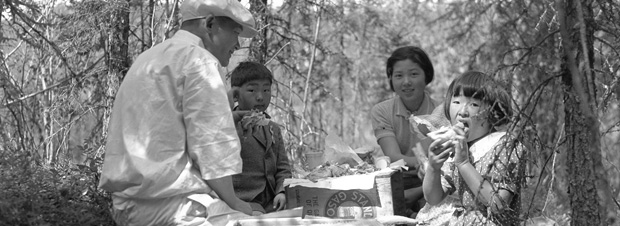

In 1921 the Yukon had 20 Asian residents; by 1941 this number had increased to 40. During World War II, after Japan attacked Pearl Harbour, Japanese nationals residing in Canada were considered enemy aliens and were required to register with the Department of National Defence. In the Yukon this work was carried out by the RCMP. In 1942, more than 20,000 men, women and children of Japanese ancestry — 75 percent of whom were Canadian nationals – were interned in detention camps in Canada. According to archival sources, no Japanese in Dawson City were interned; it is not known if any Japanese people in other Yukon communities were interned.
The years brought positive changes as well. The Chinese Immigration Act, which had virtually eliminated Chinese immigration to Canada, was repealed in 1947; that same year Chinese-Canadians and Indo-Canadians were allowed to vote. Canadians of Japanese descent were allowed to vote in 1948. The Immigration Act of 1967 evaluated potential citizens for their skills and adaptability to Canadian culture, rather than their ethnicity.
Frank Yokabada at Lou Titus’s old office, Treadwell Yukon Co., ca. 1935.
YA, Yukon Asian History Collection, 2006/146 #12
Mary Burian (née Yoshida) in front of the Chateau Mayo Hotel, early spring ca. 1958. Mary came to the Yukon in 1931, when she was 13.
YA, Yukon Asian History Collection, 2006/146 #13
Mary Burian’s son Harvey remembers his mother telling him that the Japanese residents of Mayo were required to carry identification cards.
YA, Yukon Asian History Collection, 2006/146 #17
Dawson Weekly News, January 16, 1942, p.1
Jim Quong’s vast knowledge of bridges was invaluable to building and upgrading the Alaska Highway.
Quong family photo
Article written by Jim Robb for his “Colourful Five Percent, v.1, no.1, 1984,” p.6.
YA, Pamphlet 1984-70 oversize
Harry Yamasaki in the doorway of his Hotel Galena, Keno City, 1926.
YA, William Hare fonds, 82/418 #6761
Mayo, on the Stewart River, was established after gold was found on Duncan, Minto and Highet creeks in the early years of the 20th century. Rich silver-lead deposits were found on Keno Hill in 1919, and for nearly 20 years the area was the mainstay of the Yukon economy. Several Japanese families lived in the area. Although many of the first-generation Asian immigrants to the Yukon — and the rest of Canada — were single men, by the 1920s more families became established.
George Nagano with son George, babysitter Betty Kika and daughter Jean at a Sunday school picnic, Mayo, 1937.
YA, Yukon Asian History Collection, 2006/146 #15